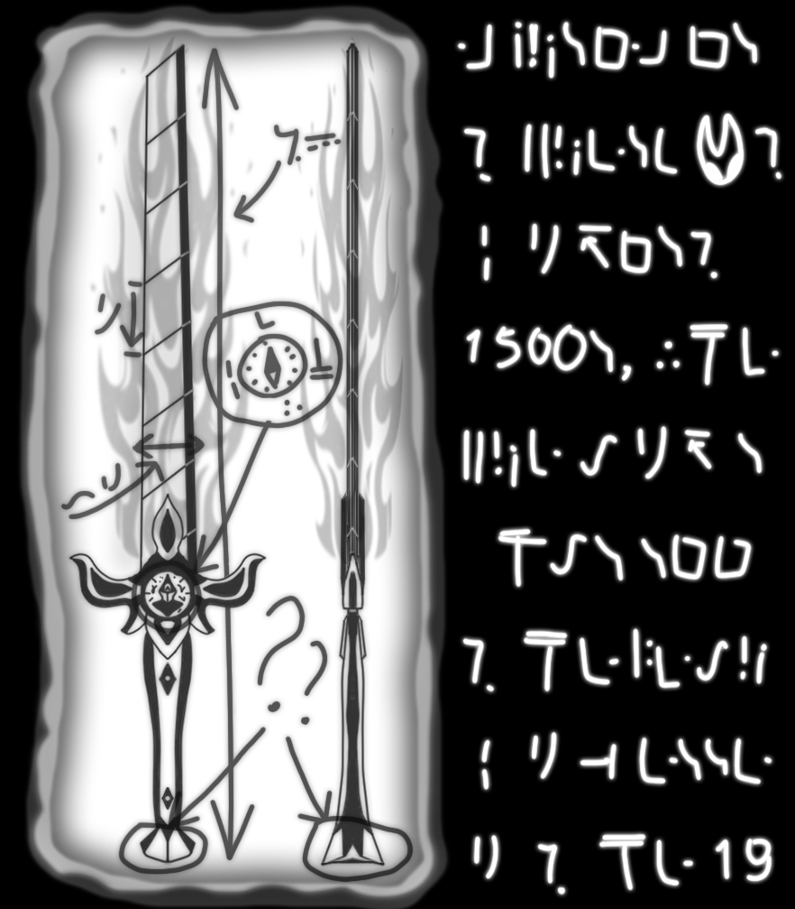
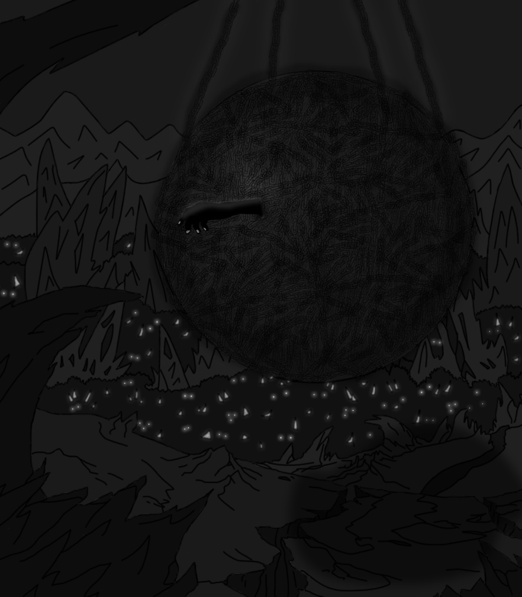
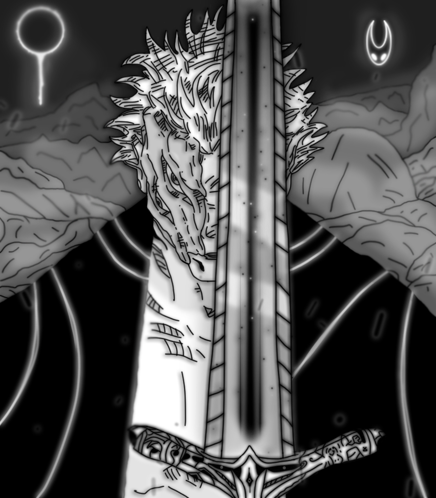

Чуже творіння
- Десь серед Раю високо вгорі
- Там Бог сидить на золотистім троні
- Ще час Ним створений не був
- І землю в руки не взяли ще зморщені долоні
- Ще час тоді свого відліку не мав
- І лише Бог це все у мить одну почав
- Безліч пилу над людським тілом у майстерні він здійняв
- "Чому зробив Ти нас?" — тихо Він мовчав
- Можливо, Йому просто стало нудно
- Можливо, намір Він якийсь секретний мав
- Можливо, наші стопи Він уже у власній крові омивав
- Ми були йому покірні
- Ми були мов малюки, що лиш старших слухались
- В сторону Його турботи ми лиш могли рухатись
- Адже навіть так — як маленькі діти мають знати як зробити краще?
- Раптом оберуть шлях, яким іти важче
- Ми були в його руках, немов в колисці
- Яку тримали міцно Його кисті
- Але хіба є щось, що може залишатись назавжди у ній?
- Побачили ми шлях новий і свій
- "Якщо ми створені Богом — значить і самі здатні бути немов Бог!"
- Ця вірність відпала і корінь її той відсох
- Краплі крові тихо у землю упали
- Із кишень ми гармати дістали
- Крики дітей і не тільки — залунали
- Власною кров'ю ми новий закон підписали
- Бог розлютився, галас на небі теж він підняв
- Пальцями клацнув — і душу людську він прийняв
- Життя він подовжив, але не на землі
- Або разом з Ним на небі вгорі
- Або далеко від Нього в темній тюрмі
- Адже створив Він не тільки той Рай
- А й місце, що шепче: "нові ти муки споглядай"
- Темне, страшне, повне сірих вогнів
- Лежать там безліч тіньових морів
- Після того як серце перестало битись
- Душа людини йде або вниз або вгору
- Чи до в'язниці чи до священного столу
Могутність, що має межі
- Знову стало вже скрізь тихо
- Ніби зупинилося це лихо
- Ніби просто перед чимось більшим навіть смерть сама замовкла
- Мов перед долею, що від смутку і нещастя так давно промокла
- Але чи було це довго — не знаю я щиро
- Знаю лиш те, що прийшло зло і без миру
- Спершу було воно диття безневинне
- І лиш потім перетворилось в чудовисько справді злочинне
- Арторіас — так його прозивали
- Люди, чиї міста і села в вогонь поринали
- Люди, які за ймення його — безжально вбивали
- Захотів він поставити ввесь світ на коліна
- І побачив це Бог, що палає й не одна країна
- І скористався Він тим, що служило як його правиця
- Людина, що була його служниця
- Арторіаса безжально взяли й отруїли
- Начебто отрутою всі його ідеї та мрії роз'їли
- Глибоко у пекло він упав
- Бог його в кайдани міцно закував
- Чи був це його кінець?
- Чи Бог перемогу вже святкував?
- Та все миттю змінилось, коли Арторіас кайдани розірвав
- Його лють, його злоба — були темніші будь-якої ночі
- І дивились на нього вражені Божі ті очі
- Лиш силою грубою кайдани він зламав
- І планів земних теж не залишав
- Але чи на цьому його дива закінчились?
- Показати він багато ще що мав...
- Силу пекла він у себе навколо ввібрав
- Те місце, що мало зробить його слабшим — зробило сильнішим за всіх
- Переступив він давно за можливий поріг
- Бог забажав його смерті — повне стирання, мов не було
- Але Арторіас був він сильніше і ненавистю від нього гуло
- Бог хотів, а він відмовився вмирати
- Одягнувши себе в пеклі вже в броньовані шати
- Бог збагнув, що влади він над дечим все ж не має
- Що дещо під зовсім незбагенні закони підлягає
- А в силах Божих над Арторіасом не тримать контроль
- А лишень стримувати — єдина можлива Йому роль
Беззбройних не вбивають
- Арторіас збирав нову безсмертну армію, по пеклу десь блукаючи
- Й тим, хто проти нього — обличчя зриваючи та голосно гукаючи:
- "Та підемо ми на тих, хто в кайдани закували нас
- Щоб вино своє спокійно пити десь на небесах"
- Але це був тільки лиш смертельного початок
- Необхідно було ще дверей знайти зачаток
- Що були і навіть без печаток
- Була лиш одна щілина і один єдиний ключ
- Чи можливо було їх відчитини голіруч?
- Арторіаса Бог перевіряти вже не став
- Бог вже діяти почав
- У пекло ангела Оцейроса прислав
- За Себе сильнішого, серед усіх найміцнішого
- Не було уже й вірнішого
- Дав Він йому і ключ і зброю
- Єдине, що йому потрібно було для бою
- І не вірив навіть Бог, що зможе найсильніший пеклу програти
- Вірив, що потім буде Сам про нього співати
- Зайшов він у пекло, але не відразу його ж там зустріли
- Закрив він мечем своїм двері і лиш тоді ворожі стріли летіли
- Бився він мов лицар, рубав всіх одразу
- Поглинав той меч їх душі, ріжучи заразу
- І ось дійшов момент до джерела справжнісінького зла
- Коли вже сама доля Арторіаса й Оцейроса звела
- Бились вони люто — крові плями повсюди розкидали
- Але поки на ногах стояли, рани їх — поступово заживали
- Хоча все ж це закінчилося фатально
- Оцейросу лице вирвали банально
- Але Арторіас зайшов навіть далі
- І не цікавили його вже жодні моралі
- На черв'яка ангел перетворений був
- І те, як втрачає свій меч — єдине, що Він відчув
- Оцейроса вбили — в небезпеці ангели та Бог
- Якщо зло в Рай пробереться — закінчиться пролог
- Якщо ангели дізнаються, що від демонів помруть
- Бог їм спокій обіцяв — самі ж Його і вб'ють
- Арторіас відразу ж забажав підняти меч з землі
- Але тільки відчув як його руки горять у вогні
- Меч — крові священного роду жадав
- А якусь іншу — він не приймав
- Навіть Арторіас не міг терпіти того розчарування та болю
- Хоч переможець тільки він після бою
- Терпів він той меч через силу та муки
- Хоч мечу все ще бракувало червоної сполуки
- Лезо його тихо сховалось
- І без крові вже ніяк не відкривалось
- Проте на руках Арторіаса краплі крові Оцейроса лишились
- Усі демони на меч лише дивились
- Арторіас ті краплі крові позбирав — і у повітря високо підняв
- У кожного із пекла — краплю крові він відняв
- Хотів він так переконатись чи нема нащадків роду славетного
- І спершу не знайшлось когось конкретного
- Але особливим виявився начебто простак
- Лоуренс, що не мав жодних ще відзнак

Власник
- Лоуренс був колись звичайною людиною
- Що любила Бога кожною клітиною
- Мав таку ж він саму кров як і Оцейрос його дід
- Мав нести такий ж самий святий плід
- Любив він й людей довкола усіх
- Любив і Маленію і її сміх
- Вийшли разом знову погуляти
- І вона вирішила це ще раз спитати:
- — Якби б ти бився проти найчорнішого зла — ти би переміг?
- — Звісно, я би переміг, ще б на пацифізмі наполіг
- І після цих слів над Маленією рука зависла
- Трохи стара й страшна, що гострий ніж затисла
- Лоуренс був поряд і захистити не вагався
- І через секунду на підлозі вже з нападником валявся
- Він відібрав його ножа, хотів лиш захищатись
- Але так склалось, що нападнику довелось з життям розлучатись
- Його ніж ввійшов в його ж тіло і та рана — єдине, що гріло
- Хоч Лоуренс справді вбивати не хотів
- Хоч все одно від суму так сп'янів
- Вчинив він вбивство випадково
- Але наслідки майбутні — будуть вже не помилково
- Остаточно тепер він у пекло потрапить
- Бо чуже життя вбивстом він квапить
Меч, що вказує дорогу
- — Ми у пеклі й дивимось на рай... Ніби кого хочеш — бери і тут вбивай... Але пропоную тобі взяти в руки зброю
- — А якщо не виконаю твою волю?
- — Тоді у мене інший план як завдати раю болю
- — Я відмовляюсь. Іди сам на Божі сходи, роби це без моєї згоди
- — Твоя згода мені не потрібна, хлопче, і байдуже, хто там що бурмоче
- — І який ж твій план? — один із демонів промовив
- — Цей хлопець до чорної магії мене підмовив
- — Невже мова йде про саме те закляття?
- — Так, і мені треба усі кайдани, щоб стримувать "моє" завзаття
- Арторіаса всіма кайданами пекла обмотали
- Найкращі ковалі — навіть ще міцніші скували
- І вже стирчала із кулі лиш одна його дуля
- Декілька рухів пальцями — і тіло Лоуренса вже було під його контролем
- На лобі його була мітка Глибини, що іноді супроводжувалась болем
- Арторіас нарешті зміг без болю меч із землі підняти
- відразу ж предмет почав демонічну кров поглинати, лезо швидко на поверхню висувати
- Хоча було навіть більше — компас на ньому напрямок до дверей почав відображати
- Свідомість Арторіаса перемістилась, проте душа в його тілі все ще містилась
- І стала цілком безконтрольною силою — саме тому була металом покритою
- Оточили те тіло й демони повсюди — щоб охороняти
- А якщо ж вибереться — зброю намагатися впихати
- Та відчинив Арторіас ті двері, вибив прямо із ноги як в своїй манері
- Відразу ж ангели в атаку полетіли, але душі їх — в меч після поразки швидко залетіли
- Вбити когось було справді складно, адже всі вже давно й мертвими були
- Тому лиш варіант тіло пошкодити, щоб душі самі з нього втекли
- І щоб запобігти поверненню душі назад — її запечатати потрібно у предмет, якщо звісно не хочеш, щоб хтось казав ще один куплет
- І почав Арторіас війну між усім і всіма
- Кожен тут бився мов із двома
- І проти Бога деякі ж ангели самі постали
- Хоч деякі все ще Творця свого захищали
- Намагався Арторіас кожного рубати — кого міг хоч якось дістати
- Піднімався він по сходах за хмари — щоб Бога порвати, не думав ні на мить, щоб тікати
- Удар за ударом — кров ангельська проливалась від святого меча
- І душа ангелів ним поглиналась — тіла їх свіча
- І коли вже впасти мав останній ангел — рука засумнівалась
- Мов свідомість Людвіга назад поверталась, сили і люті на мить вона набралась
- Але Арторіас швидко відновив над тілом контроль, усвідомлюючи як багато знищив доль
- Піднявшись нагору він лиш один удар зміг завдати, адже ще до Арторіаса Богу довелося охоронців своїх розіп'яти, які проти Нього й вирішили встати
- Бог був ослаблений значно, хоч Арторіас все одно "розіграв" з ним обачно
- Відступав Бог якнайдалі, поки Арторіас атакував на запалі
- Але Бог також мав план особливий, поки ворог думав, що Він просто боязливий
- І прямували вони до дверей, що на Землю вели
- Але ланцюги з його справжнім тілом вже попливли
- Підійшов Арторіас до дверей, готовий мечем їх відкрити й все людство розтрощити — свою маленьку земну мрію нарешті втілити
- Але Бог інший план мав — складне закляття він промовляв
- Арторіас хотів удару фінального вже нарешті завдати, поки Він зможе закляття застосувати
- Але знов рука з мечем перед Богом зависла
- Сила Лоуренса — Арторіаса на мить дотисла
- Маленія все ще по землі ходила
- І Людвіг не хотів, щоб його ж рука і смерть їй причинила
- І в момент останній, коли Арторіас вже хотів двері відчинити — Лоуренс зумів план його придушити
- І тіло Арторіаса вже було готове все пекло згубити
- Боже закляття той світовий міст зруйнувало
- І світло по всьому Раю відлунало
- Енергія світла була випущені прямо у дорогу між світами — нема тепер більше брами
- Меч з дверима на пил перетворився, щоб Арторіас схилився
- Почав він пил той роздивлятись, в різні сторони гнівно так кидатись
- Але ціною Божого закляття це був і Бог
- Закляттям завершив Він той епілог
- Помер Бог, померло й потойбіччя для людей
- І ніхто із них навіть не мав у голові таких ідей
- Арторіас вернувся у тіло своє те колишнє
- Коли якраз воно вже вирішити хотіло, що навколо лишнє
- Але на Лоуренсі все ще печатка була — ще на раз контроль дала
- У мить не за своїм бажанням Лоуренс через світи перемістився
- Але зовсім не для того, щоб Арторіас з ним бився
- Хотів Арторіас його покарати, але жодна смерть не дала б потрібної відплати
- Кинув Лоуренса в ту прірву, у якій сам колись сидів, але для нього особивий подарунок приглядів
- Колишній ангел, який на черва був перетворений
- Тепер через пекло став ще більше спотворений
- Запхав Арторіас черва прямо в його вухо, щоб в його голові більше ніколи не було глухо
- Підписав він Лоуренсу вічні страждання, глибоко між камінням неминучі ламання
- Навіть сам процес був сповнений криків та ридання
- "Чому ти це робиш?" — задав Лоуренс лиш одне питання, на яке отримав лиш ще одне мовчання
- Пішов Арторіас зі всіма пекла мешканцями за стіл та трон у Рай
- І лиш для останнього жителя пекла передав: "Навіки бувай"

Моя тінь більше не йде за мною
- — Йоу, прокидайся й привіт! Це тепер твій новий світ!
- — Ех... І хто ж це ти?
- — Клок, якому хтось колись давно сказав "світи!"
- — І хто ж був це?
- — На жаль, не пам'ятаю я його лице...
- Було темно і лиш вогник Клок сяйво роздавав
- Лише він інформацію про навколишнє давав
- Позаду була стіна бетонна, а попереду — трохи тривожна
- — Дивись... Тут ти можеш у вихід зайти. Але спершу тобі треба ключі знайти
- — А де ж мені їх шукати, якщо тут вже нема куди далі крокувати?
- Клок навколо Лоуренса прокружляв і ще одну дорогу показав
- — Ось тут коридор лежить, а я буду там тобі світить
- Крокували його ноги, але почалися нові діалоги
- — Клоку, дивись, там вдалині якесь ще світло сяє
- — Так... І моє поступово вже згасає. Це магічний бар'єр, що мене не пускає. На жаль, доведеться тобі самому йти вже далі
- Там вже не так пітьмою гриміло, тому б Клока світло лиш зайвим би горіло
- — Цей бар'єр лиш людей чекає — будь-яких духів він відкидає, але приймає лиш тих, хто кров'ю стікає, але якщо текти вона припиняє — вважай, що смерть тебе вже чекає
- — Там є стіл й на ньому чорний ніж...
- — Так, тільки глибоко не ріж...
- Лоуренс ножа в руках міцно застиснув, лезо до лівого плеча притиснув
- Один легкий рух руки й лилась кров через віки
- Пройшло тіло крізь прохід і хоч кров лилась — воно готове йти в похід
- Лоуренсу на останок Клок сяйвом помахав поки Лоуренс знову рану оглядав
- Пройшовши ще трохи Лоуренс двері відчинив і цим реальність попереду створив
- Коли ще до ручки дверної він торкнувся, найбільший його страх в реальність обернувся
- Попереду нього багатоповерхівки височенні з'явились і вікна кожної з них — на нього дивились
- Лоуренс хотів відразу назад повертатись — та двері вже не бажали відчинятись
- Залишався лиш шлях крізь висоту та страху неба ваготу
- Попереду була вузенька балка металева, кожен скрегіт звучав мов рик лева
- Страх кожен вдих переповнював, холодний погляд його лиш доповнював
- І коли вже шлях той пройдений був — наступні двері чекали
- І спогади вони його мов книгу прочитали
- Поки руки знову плечі розрізали
- Ніби попереду був ще один звичайний коридор
- От тільки містив він небажаний повтор
- Напівпрозора улюзія попереду з'явилась
- І туга на Лоуренсові очі відразу ж звалилась
- — Не вбивай його, тебе я благаю... Смерті йому я чесно не бажаю...
- Тіла їх білим сяйвом світились, руки ще швидше трусились
- Проте інший Лоуренс, що колись по Землі блукав — закривавлений ніж в руках уже тримав
- Лоуренс справжній просто від цієї сцени відвернувся і хоч трохи стрепенувся, але раптом схаменувся
- Арторіас ж у раї сидів, на власний меч він глядів
- Але в момент один побачив під руків'ям він ще одну шкалу, яка означала його ж володаря жагу
- Це була кількість душ, які меч поглинув, скільки власник ворогів розкинув
- Йому вже було нічого робити, набридло вже вино священне пити
- Портал до людей Богу вдалося зруйнувати, вирішив Арторіас почати демонів вбивати
- Навіть своїх радників він вирішив не шкодувати, хотів лише він ту шкалу заповняти
- Лоуренс хотів наступні двері відчинити
- Ручці їхній вдалося увагу захопити
- Але приклавши на її поверхню руку — нестерпний біль всередині відчув, факт один він осягнув
- Ці двері — вони рукам піддадуться, але тоді вони ж самі в болях окунуться
- Лоуренс захотів зробити хитріше — обмотав шматок сорочки на дверях щільніше
- Тканина від болю його визволяла, завдяки руху руки — двері болючі відчиняла
- Пройшовши далі — коридор новий постав перед ним
- Заповнений він був мороком німим
- На підлозі викарбувана лінія лежала
- Між комфортом і болем вона шлях межувала
- Ступивши крок вперед — Лоуренсове тіло біль охопив, шлях у кілька метрів він значно ускладнив
- Лоуренс ступню свою назад забрав
- Але біль мов від голок під шкірою — все ще в його тілі вирував
- Лоуренс на біль налаштувався, пройти крізь пекло він збирався
- Зібрав він сили всі свої в кулак
- Дивився він на двері попереду мов голодний той хижак
- Зробив він крок знову в самий центр болю
- Почав кричати даючи злості волю
- Не залишаючи шансів змінити його долю
- Прорвався він до самого кінця
- І хоч тіло його страждало безмежно — не було на ньому жодного синця
- Відчинивши двері ще одні
- Побачив дещо він, що сяяло в пітьмі
- Під стіною було Лоуренсове тіло
- І лиш на половину воно уціліло
- Тримало воно в руках кристал доволі невміло
- Підійшовши ближче Лоуренс кристал той з рук дістав
- Ключі всередині коштовності він впізнав
- На підлозі поруч був кінець бар'єру, що був на початку
- І щоб розвіяти його — тримав в руках уже печатку
- Там був виріз якраз по формі кристалу
- Поклав туди він його помалу
- Бар'єр швидко розчинився і перед ним прохід новий відкрився
- Це були сходи, що вниз вели
- — І коли ж це все звели...
- Кристал з ключами як джерело світла слугувало
- — Блукати ще в темряві після всього бракувало
- У підвал він зайшов, який дечим більшим слугував
- Побачив там він декого, кого точно не чекав
- Посеред кімнати сам Арторіас стояв
- На секунду страх Лоуренса порвав і все ж тікати він не став
- Але Арторіас побачивши кристал все ж дещо та сказав
- — Не бійся не завдам я тобі шкоди
- — З якої вважаєш ти мене породи?
- Лоуренс швидко ніж дістав, хоч від цього тиск лише у Лоуренса й зростав
- — Якби хотів би вбити це давно б уже вчинив — хоч черв лиш копію мою уявну ледь зробив
- — Мені вже нікуди тікати — чого ще крім смерті можеш ти мені бажати?
- — Можливо, прошу я забагато, але повір моїм словам — і тоді ключі тобі я дам
- Лоуренс почав кристалом по стіні найближчій бити, щоб коштовність ту відкрити
- Але лиш шматки каміння розлітались, поки ключі всередині лишались
- — У тебе так розбить його не вийде жодним чином жодним клином
- — Мені твої репліки так потрібні як і оса з ослом подібні
- Арторіас за межу заступив і крок в сторону Лоуренса зробив
- Лоуренс ножем його штрихнув, але в результаті тільки ніж погнув
- Взяв кристал він той з рук його безперешкодно і здавалось все мерзотно
- Але зробив те, що на мить здавалося зовсім вже беззлобно
- Затиснув кристал він між свої щелепи кам'яні — полетіли іскри вогняні, посипались осколки кристалу піщані
- Ще секунда — зняв з язика він чотири ті ключі і хлопнув Лоуренса по здорову плечі
- — В наступному коридорі золота чаша тебе вже чекає, яка крові все ще нахабно жадає, прохід вона в один кінець відкриває, — після цих слів Арторіас Лоуренсу ключі простягає. — Моя кров у тілі все ще грає, але ран приймати воно зовсім не бажає
- Лоуренс ключі швидко взяв і Арторіаса у ту ж мить уже лишав
- Дійшовши до чаші, невеличку краплю крові із плеча він поклав — цим шлях до виходу проклав
- Але на Лоуренсове здивування прийшов він туди звідки почав — Клок його вже сяйвом зустрічав
- — Вау! Ти ключі знайшов! І до виходу дійшов! Фінальні двері особливі і замки на них важливі — всі чотири вони мають бути провернуті у один момент — лише тоді двері відкриються — найважливіший елемент
- — Але я маю лише одну пару рук — як я маю двері відчини, якщо я ж не павук?
- Клок вже вихід мав — про свою здатність давно він вже знав
- У звичайної сфери руки з двох боків почали рости — лише так він міг їх разом звести
- Лоуренс став знизу — два ключі провернув
- Клок підлетів вище — верхні замки відімкнув
- Одночасно ці події стались — темні двері після цього відразу ж відкривались
- Клок полетів всередину без жодного наказу, Лоуренс пішов за ним майже відразу
- — Далі просто прямо йти — як до виходу прийти?
- Клок у момент той замовк і погасло світло його біле, мов стало воно із чимось іншим вже ціле
- — Привіт-привіт, ось я друг твій маленький! Хоча, мабуть, не такий і вже добренький
- Постала серед темряви постать нова — це вже зовсім інша глава
- Чотири руки і темні очі, що були знаком його мощі
- — Де вихід? І звідки ти тут узявся? Куди Клок подівався?
- — Мабуть, спершу мені треба було представитись, хоч я вже і був готовий квапитись. Я Людвіг — називай мене злом абсолютним, яке стримувалось світом невідступним... Звідки я узявся? Це завдяки чужій злобі я сили набрався... Спершу мене люди вчинками створили, але сили Божі мене у клітці заточили, по шматочках в душі кожній розділили... Бог — жоден окрім нього моєї присутності не відчував, жоден окрім нього про мене не знав... але якщо не помиляюся, то своє життя він вже недавно віддав... Як жаль, хотів я позмагатись, із тим хто заточив мене нарешті поквитатись... До речі, двері, що позаду тебе стоять — створені щоб мене всередині тримать... Але сила й за дверима відчутна — і за ними була мені доступна: Клок це лиш ілюзія, якою я керував і вказівки тобі з напрямком давав... і ось ти місце слабке в собі знайшов — тоді кожен мій шматок з душ усіх на волю пішов, повноцінним всмістилищем тепер мені ти станеш... Цікаво як швидко ти тут зів'янеш...
- — Ти прокляття, що заслуговує на розп'яття!
- — Гаразд... Думай як знаєш, сподіваюсь тут не заблукаєш
- — Ти чудовисько й творіння жахливе — яке окрім цього й дратівливе!
- — На даний момент я сприйму це... за комплімент... та і на дратівливого поки лиш ти один схожий, увесь такий тут ти ворожий...
- Лоуренс пішов навкулачки у ту ж мить, кров його злісно після всього вже кипить
- Людвіг плавно кинжал свій дістав і ним Лоуренса у слушну мить спіймав
- — Біль... це те заради чого я борюся...
- — Ого... Я майже тебе вже боюся
- Людвіг Лоуренса за дверима залишив із цими словами, прокрутив він ключі усіма руками
- У ту мить тіло Лоуренса змінилось: на чудовисько з середини перетворилось, лице чудовиськом вкрилось
- Дві нові руки з'явились, проблиски світла в очах навіки вже закрились
???
- Арторіас знищив рашту так давно, від меча душами сильно так гуло
- Поглинув він їх так багато, що хотів на Землі робить вже свято
- Меч так багато душ поглинув — нового рівня він дозринув
- Той меч у силі значно зріс і тепер вже меч Ямато Арторіас поніс
- Меч, що крізь усе скінченне міг легко прорізати
- Власника навіть у інші світи лезом відправляти
- — Хм... Всіх вбив, але одного все ж мабуть залишив
- Арторіас розгядати новий меч у мить оту облишив
- Людвіг вже давно з діри своєї вирушив
- Черва в голові рукою видушив
- Але не для того, щоб життя його скінчити
- Чи кровотечу в мозок зупинити
- А для того щоб на щось нове перетворити
- З черва смертельну зброю так створити
- Меч Чорної діри — щоб лиш кров чиюсь пролити
- Високо підняти, щоб половину свого людського обличчя чорним лезом закривати
- — А цей хлопець справді особливий — навіть звідси відчуваю я наскільки він злобливий
- Енергію Людвіга можна було за кілометр відчути
- Більшості не дав би він навіть зброєю махнути
- Арторіас вирішив першим удару завдати, знаючи, що Ямато вдасться одним ударом будь-кого розрубати
- Почалася грандіозна нова битва, хотіли знати в кого з них гостріша бритва
- Сторона цього хлопця навмисно відрилась, щоб гордість Арторіаса перед сильнішим скорилась
- Удар він був сильний, був він і влучний, але стик від удару був майже беззвучний
- — Чому не ушкоджений він і його тіло?
- Хоч в Арторіаса воно трохи затремтіло
- — Цікаві у вас тут привітання, — сказав Людвіг не маючи ні грама хвилювання
- Ніби він й не розумів, хто перед ним стоїть... Хоча швидше Арторіас не знав, яку силу він таїть
- — Чому на тобі жодної подряпини, хоч на мечі майже вже є вм'ятини. Це зброя, що через так багато прорізати здатна і сила моя стала вже доволі знатна
- — Так, але не через нескінченність — цього не знала твоя самопевність. Дозволь пояснити — меч Чорної діри це мій клинок, що має здібності рівня зірок
- — Що ти під цим на увазі маєш? Здається, з ким справу маєш ти зовсім не знаєш...
- — Тобто ти теж нескінченність як і я у руках своїх тримаєш? Бар'єр нескінченності на своїх пальцях відчуваєш? Мій меч мене захищає, тіло володаря він бар'єром нескінченності вкриває
- — Ти знаєш скільки часу знадобилось, щоб я мав в руках цей свій Ямато?
- — Ну... Мені влаштувати тобі свято? Скільки б часу пішло у тебе неохочого — не знайдеш ти за секунду мого чогось більш дорожчого
- — До речі, дещо спільне між собою все одно ми маєм — жагу до руйнації у наших серцях ми тримаєм. Можливо, якби б ти не був настільки слабкий я б взяв тебе боротись на своїй стороні
- — Ідеї твої досить дурні... Мені команда жодна не треба, вже давно відпала в ній потреба: або мені судилось всі світи підкорити або більше ніхто не має там права дорогу кров'ю стелити
- — Гаразд-гаразд, дам я шанс тобі себе показати, і все ж я меч свій хочу сховати, щоб шанс банальний тобі дати — якщо тобі вдасться одного удару мені хоча б якогось завдати — помилування змушений буду я тобі подарувати
- Арторіас знову в атаку смертельну пішов — до використаннях смертельних тактик він прийшов: у той момент Розмиттям він скористався — простір навколо жертви розривався, створюючи численні портали — з яких безлічі рук жертву з усіх сторін атакували
- Але якби Арторіас в бою не старався — Людвіг все ж неушкодженим лишався
- — І це все на що здатен ти? Як вдалось підкорити взагалі якісь світи? І чомусь від тебе я на більше сподівався, — після цих слів Людвіг за Арторіасову руку міцно взявся, один рух швидкий — Арторіас за рану вже тримався, Людвіг був перший хто до його крові добрався
- — Вперше в житті перед мною той, кого перемогти я не можу, з цим супротивником я сам собі вже не допоможу — треба на Землю відступити, а його можна гнити тут самого залишити
- Арторіас портал на Землю забажав відкрити, але план його не вдалось йому здійснити: спробувати портал відчнити — означало захист свій відкрити
- — Не квапся ти аж так вже сильно, дивлюся за кожним рухом твоїм я досить пильно
- У момент відповідний Людвіг Арторіаса за ногу щільно взяв і у повітря високо послав
- Арторіаса зустріла скеля висока — був він вже без одного ока
- — Ворог мій занадто сильний, а я не такий уже й всесильний... Без меча він навіть б'ється і все одно кров лиш моя ллється
- Арторіас до нових прийомів вдався, хоч на його використання він таки вагався — Тіньову нитку він з душею своєю та мечем Ямато створив, сили майже безмежні він пробудив: регенерація й могутність, майже обмежень будь-яких відсутність... але за винятком того, що смерті власник жоден не уникне, хоча Арторіас і так певен, що вже зникне: вирішив забрати він ворога з собою, даючи нічию цьому двобою. Цей процес зупинити неможливо і рано чи пізно душа власника повністю покине тіло...
- — Ах... смерть стань моїм лезом ще один раз — останній мій тобі наказ...
- — Мені справді подобається запал, який я бачу, якщо пропущу таке — ніколи собі вже не пробачу
- Арторіас ударними хвилями Людвіга намагався здалеку притиснути — скоротити дистанцію і в ближньому бою уже дотиснути
- План його добре спрацював — до фіналу вже бій той прямував
- В момент фінального вже для Людвіга удару — вирішив той, захистити себе від кошмару: в момент останній меч він свій підняв — захисну оболонку нескінченності здійняв
- Але... його це вже не захистило, занадто велика була сила — Ямато з іскрами крізь захист прорвався, до самого серця гарячим лезом добрався
- Ворогу настав кінець — вже тепер він не живець... Але Арторіас після удару теж впав від знемоги — занадто багато потребував удар сил задля перемоги
- Закінчилось отак життя обох... лиш два мечі... що лежатимуть безлічі епох...

Кінець!